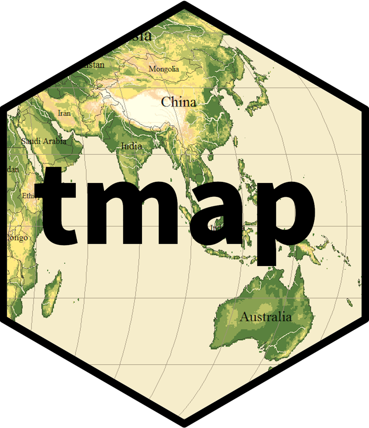
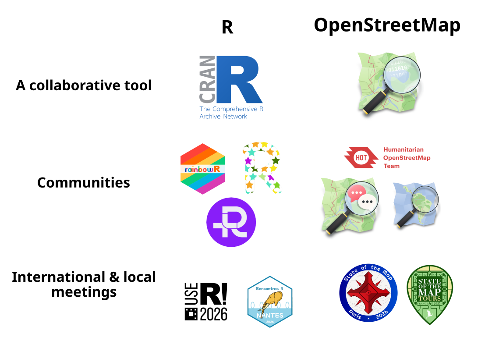
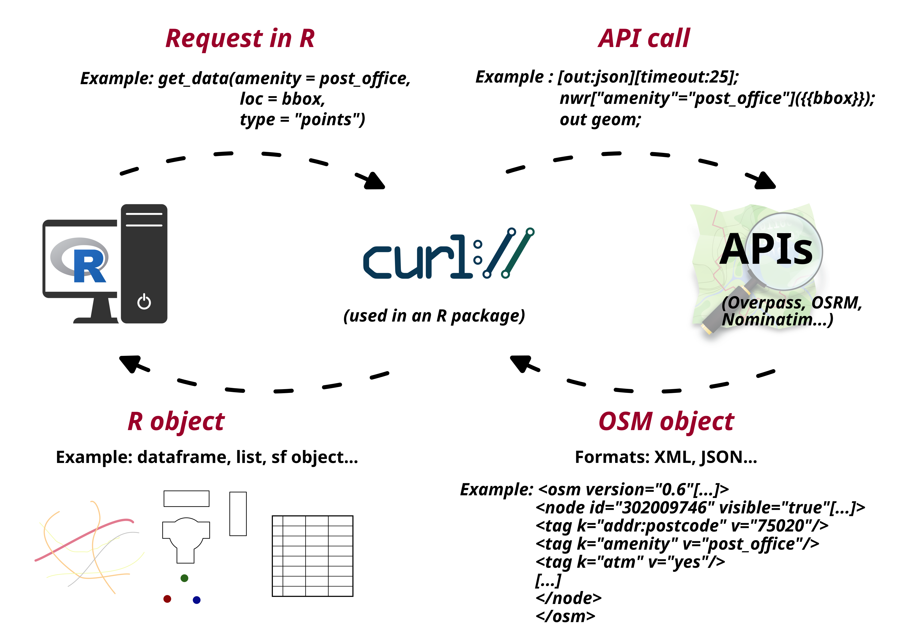
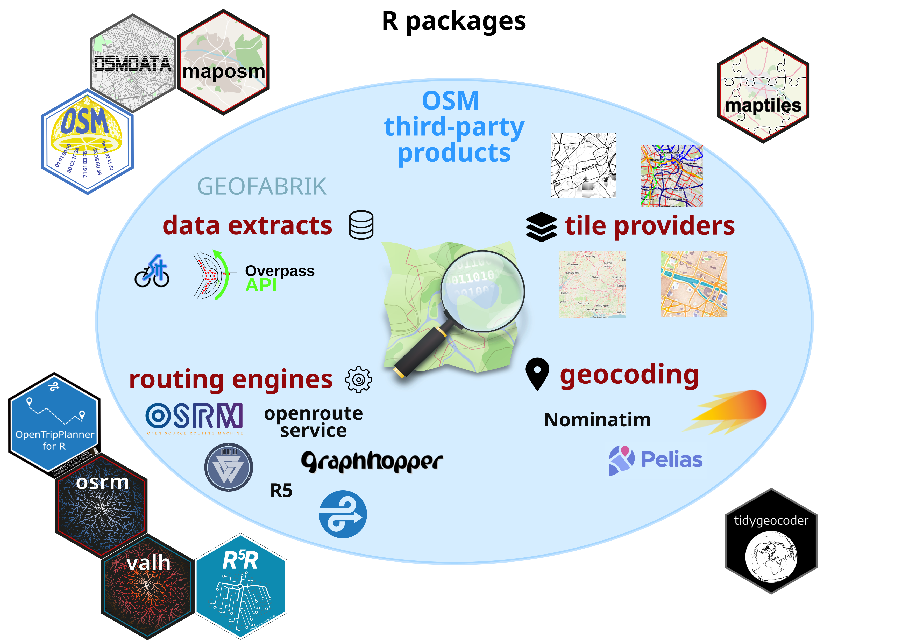
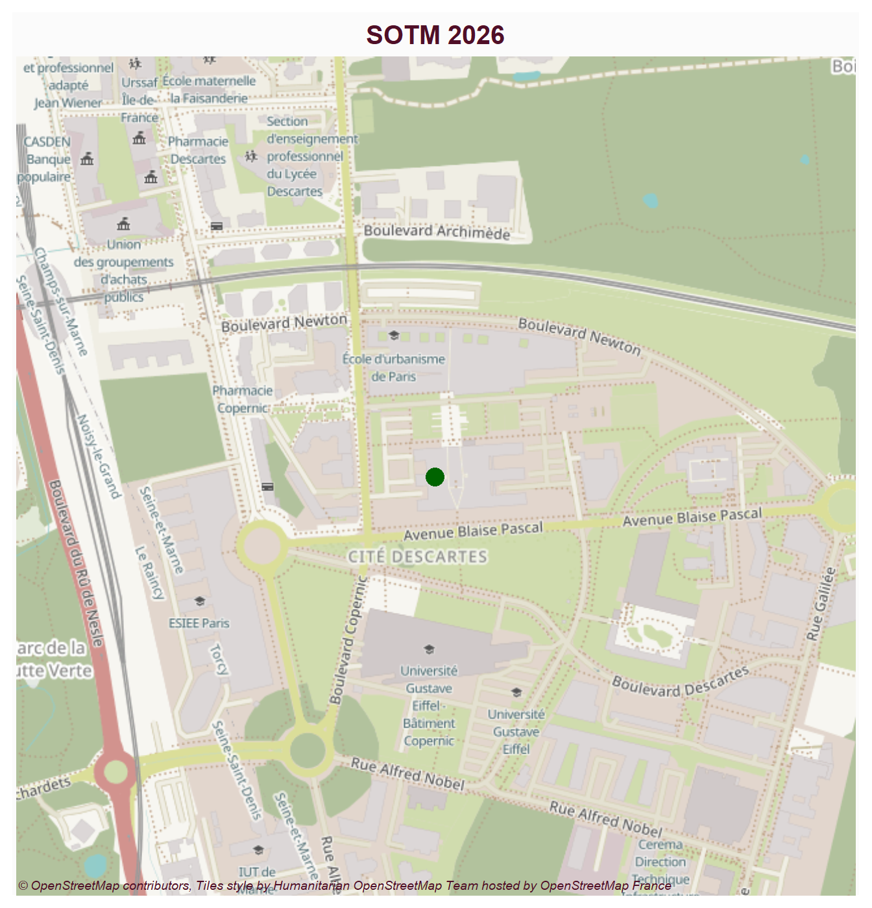
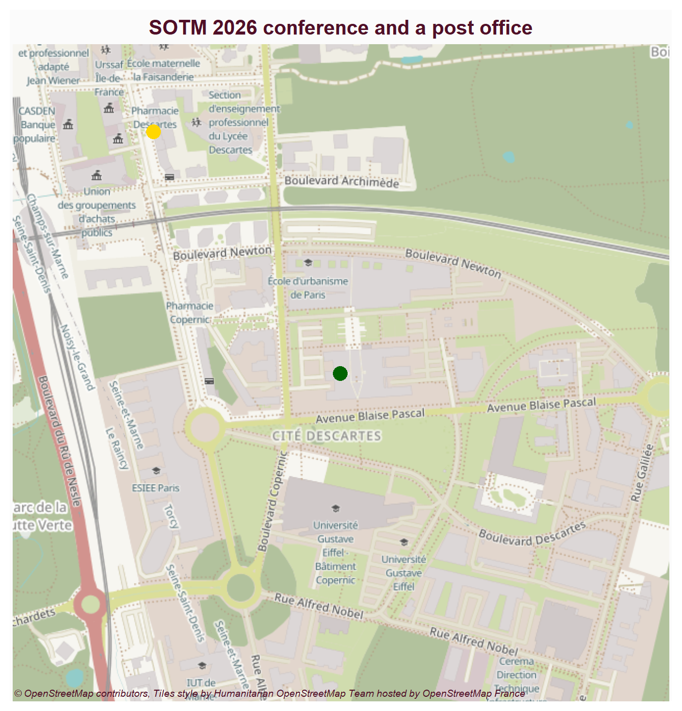
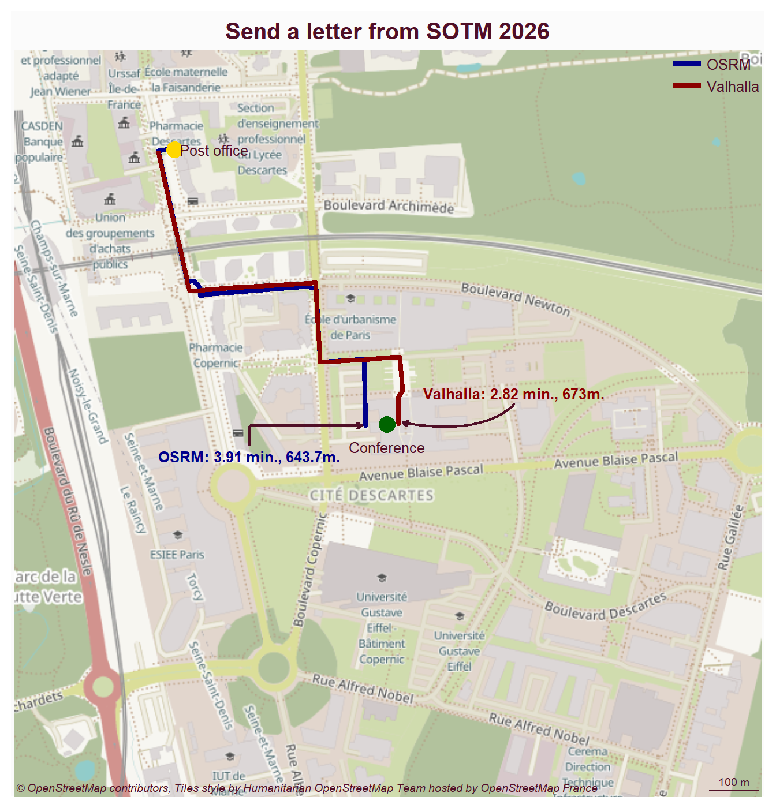
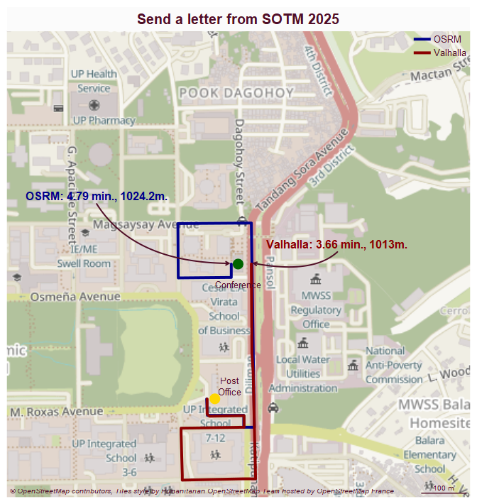
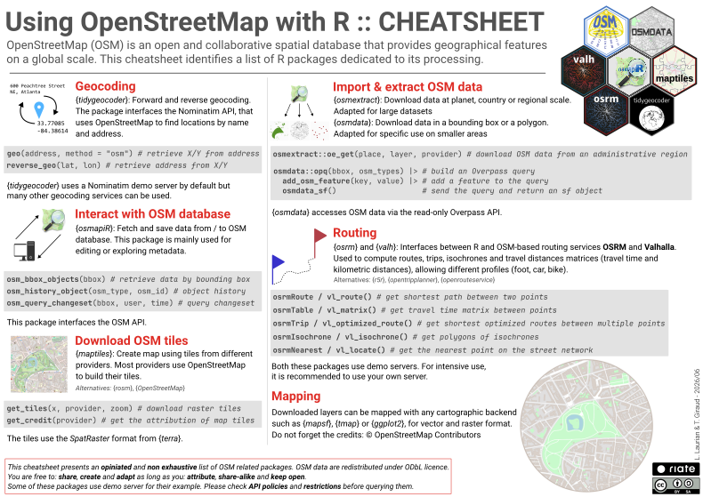
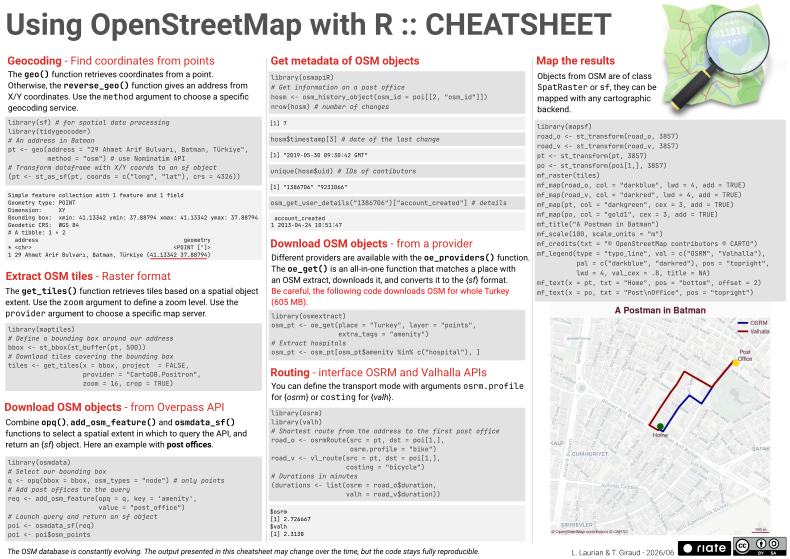

Simple feature collection with 1 feature and 1 field
Geometry type: POINT
Dimension: XY
Bounding box: xmin: 2.587371 ymin: 48.84108 xmax: 2.587371 ymax: 48.84108
Geodetic CRS: WGS 84
# A tibble: 1 × 2
address geometry
* <chr> <POINT [°]>
1 6 Av. Blaise Pascal, 77420 Champs-sur-Marne (2.587371 48.84108)From OpenStreetMap APIs to Insightful Data Analysis: Extraction, Analysis, and Mapping with R
State of the Map - Paris 2026
Louis Laurian, Timothée Giraud, Matthieu Viry, Ronan Ysebaert
Centre pour l’analyse spatiale et la géovisualisation
28 Aug 2026
Plan
- The R Software
- R and OSM
- Reproducible Example
R
The R Software

- Free and open source software (GNU GPLv3)
- Work most OS
- Geared towards reproducible research
- Unified workflows
- Packages developed by the community (CRAN)
The R Software Spatial Ecosystem
Vector Data Handling
sf (Pebesma, 2018)

Main features
- import / export
- display
- geoprocessing
- support for unprojected data
- use of the simple feature standard
Raster Data Handling
terra (Hijmans, 2022)

Main features
- import / export
- display
- study area modifications
- spatial algebra
- transformation and conversion
The R Software Spatial Ecosystem
Thematic Cartography
mapsf (Giraud, 2023a)
tmap (Tennekes, 2018)

ggplot2 + ggspatial (Dunnington, 2025) Spatial analysis / spatial statistics
spatstat: Point pattern analysisgstat: Variograms and Krigeagergeoda: Geoda with RGWmodel,spgwr: Geographically Weighted Models
- Spatial sampling
- Point pattern analysis
- Geostatistics
- Disease mapping and areal data analysis
- Spatial regression
- Ecological analysis
R and OSM

How does it work ?

Overview

Access to the database
Find OSM data
R packages
osmextract(Gilardi and Lovelace, 2021), imports datasets from both Geofabrik and BBBikeosmdata(Mark Padgham et al., 2017), downloads OSM data from the Overpass API
Geocoding and Routing
Routing engines
OSRM, pre-processed routes
Valhalla, based on tiles
R5, allows multimodal routing (GTFS tables)
OpenTripPlanner, integrated web server
Geocoding tools
R packages
osrm(Giraud, 2022)valh(Giraud and Viry, 2025)r5r(Pereira et al., 2021)opentripplanner(Malcolm Morgan et al., 2019)
tidygeocoder(Cambon et al., 2021), 15+ providers (default Nominatim)
Cartography
OSM layers
R packages
leaflet(Cheng et al., 2018) andmapview(Appelhans et al., 2018), dynamic cartography (OSM background)maptiles(Giraud, 2023b), downloads raster tilesmaposm(not yet on CRAN), downloads geographic layers
Reproducible Example
Geocoding - Retrieve coordinates from an address
Interactive map with OSM background layer
Tiles extraction - Raster format
class : SpatRaster
size : 644, 644, 3 (nrow, ncol, nlyr)
resolution : 2.388657, 2.388657 (x, y)
extent : 287257.5, 288795.8, 6247172, 6248710 (xmin, xmax, ymin, ymax)
coord. ref. : WGS 84 / Pseudo-Mercator (EPSG:3857)
source : tiles.tif
colors rgb : 1, 2, 3
names : red, green, blue
min values : 82, 82, 82
max values : 255, 255, 255Plot tiles - Raster format

Download OSM data - from Overpass API
osm_id | name | addr:city | addr:housenumber | addr:postcode | addr:street | amenity | atm | change_machine | copy_facility | opening_hours | operator | operator:wikidata | panoramax | phone | post_office | ref:FR:LaPoste | source | stamping_machine | website | wheelchair | geometry |
|---|---|---|---|---|---|---|---|---|---|---|---|---|---|---|---|---|---|---|---|---|---|
813539238 | La Poste | Champs-sur-Marne | 5 | 77420 | Avenue André-Marie Ampère | post_office | yes | yes | yes | Mo-Fr 13:45-18:00; Sa 09:00-12:00; PH off; 2024 May 20 off | La Poste | Q373724 | c7f797ac-9540-4f6c-9f7e-fa38de9f7718 | 3631 | bureau | 14675A | data.gouv.fr:LaPoste - 06/2015 | yes | https://www.laposte.fr/ | yes | [[XY]] |
Download OSM data - from Overpass API

Routing - interface OSRM and Valhalla APIs
Simple feature collection with 1 feature and 4 fields
Geometry type: LINESTRING
Dimension: XY
Bounding box: xmin: 287553.8 ymin: 6247937 xmax: 287981.3 ymax: 6248507
Projected CRS: WGS 84 / Pseudo-Mercator
src dst duration distance geometry
1_813539238 1 813539238 3.913333 0.6437 LINESTRING (287981.3 624793...Simple feature collection with 1 feature and 4 fields
Geometry type: LINESTRING
Dimension: XY
Bounding box: xmin: 287554.6 ymin: 6247940 xmax: 288057.1 ymax: 6248498
Projected CRS: WGS 84 / Pseudo-Mercator
src dst duration distance geometry
1_813539238 1 813539238 2.81915 0.673 LINESTRING (288048.5 624794...Map the results
road_o <- st_transform(road_o, 3857)
road_v <- st_transform(road_v, 3857)
start_o <- st_cast(road_o, "POINT")[1,]
start_v <- st_cast(road_v, "POINT")[1,]
mf_raster(tiles)
mf_map(road_o, col = "darkblue", lwd = 4, add = TRUE)
mf_map(road_v, col = "darkred", lwd = 4, add = TRUE)
mf_map(pt, col = "darkgreen", cex = 3, add = TRUE)
mf_map(po, col = "gold1", cex = 3, add = TRUE)
mf_title("Send a letter from SOTM 2026")
mf_scale(100, scale_units = "m")
mf_credits(maptiles::get_credit("OpenStreetMap.HOT"))
mf_legend(type = "typo_line", pos = "topright",
val = c("OSRM", "Valhalla"),
pal = c("darkblue", "darkred"),
lwd = 4, val_cex = .8, title = NA)
mf_text(x = pt, txt = "Conference", pos = "bottom",
offset = 2)
mf_text(x = po, txt = "Post office", pos = "right")
mf_text(x = start_o, col_txt = "darkblue", cex = .8,
pos = "bottomleft", line = 2, clockwise = TRUE,
offset = 5,font = 2, txt = paste0("OSRM: ",
round(road_o$duration,2), " min., ",
road_o$distance * 1000, "m."))
mf_text(x = start_v, col_txt = "darkred", cex = .8,
pos = "topright", line = 3, clockwise = TRUE,
offset = 5, font = 2, txt = paste0(
"Valhalla: ", round(road_v$duration,2),
" min., ", road_v$distance * 1000, "m."))
And now for the reproducibility…
Throwback to last year
pt <- geo(address = "GT-Toyota Asian Center Auditorium, Magsaysay Avenue",
method = "osm")
pt <- st_as_sf(pt, coords = c("long", "lat"), crs = 4326)
bbox <- st_bbox(st_buffer(pt, 500))
tiles <- get_tiles(x = bbox, project = FALSE,
provider = "OpenStreetMap.HOT",
zoom = 16, crop = TRUE)
pt <- st_transform(pt, 3857)
poi <- bbox |>
opq(osm_types = "node") |>
add_osm_feature(key = 'amenity', value = "post_office") |>
osmdata_sf()
poi <- poi$osm_points
po <- st_transform(poi[1,], 3857)
road_o <- osrmRoute(src = pt, dst = po, osrm.profile = "bike")
road_v <- vl_route(src = pt, dst = po, costing = "bicycle")
road_o <- st_transform(road_o, 3857)
road_v <- st_transform(road_v, 3857)
start_o <- st_cast(road_o, "POINT")[1,]
start_v <- st_cast(road_v, "POINT")[1,]
mf_raster(tiles)
mf_map(road_o, col = "darkblue", lwd = 4, add = TRUE)
mf_map(road_v, col = "darkred", lwd = 4, add = TRUE)
mf_map(pt, col = "darkgreen", cex = 3, add = TRUE)
mf_map(po, col = "gold1", cex = 3, add = TRUE)
mf_title("Send a letter from SOTM 2025")
mf_scale(100, scale_units = "m")
mf_credits(maptiles::get_credit("OpenStreetMap.HOT"))
mf_legend(type = "typo_line", val = c("OSRM", "Valhalla"),
pal = c("darkblue", "darkred"), pos = "topright",
lwd = 4, val_cex = .8, title = NA)
mf_text(x = pt, txt = "Conference", pos = "bottom", offset = 2)
mf_text(x = po, txt = "Post\nOffice", pos = "topright")
mf_text(x = start_o, col_txt = "darkblue", pos = "topleft",
cex = 1, line = 3, clockwise = FALSE, offset = 25, font = 2,
txt = paste0("OSRM: ", round(road_o$duration,2),
" min., ", road_o$distance * 1000, "m."))
mf_text(x = start_v, col_txt = "darkred", pos = "topright",
cex = 1, line = 3, clockwise = TRUE, offset = 5, font = 2,
txt = paste0("Valhalla: ", round(road_v$duration,2),
" min., ", road_v$distance * 1000, "m."))
Examples of RIATE’s work with OSM data
Bonus
Using OSM with R, the cheat sheet


Using OSM with R, the cheat sheet
You can download the cheat sheet using the QR code:
https://zenodo.org/records/20842874
Thank you
You can access the slides using the QR code:
https://riatecom.github.io/R_OSM_SOTM_2026/

References
Appelhans, T., Detsch, F., Reudenbach, C. and Woellauer, S. (2018). Mapview: Interactive viewing of spatial data in r. https://github.com/r-spatial/mapview
Cambon, J., Hernangómez, D., Belanger, C. and Possenriede, D. (2021). Tidygeocoder: An r package for geocoding. Journal of Open Source Software, 6(65), 3544. https://doi.org/10.21105/joss.03544
Cheng, J., Schloerke, B., Karambelkar, B., Xie, Y. and Aden-Buie, G. (2018). Leaflet: Create interactive web maps with the JavaScript ’leaflet’ library. https://rstudio.github.io/leaflet/
Dunnington, D. (2025). Ggspatial: Spatial data framework for ggplot2. https://doi.org/10.32614/CRAN.package.ggspatial
Gilardi, A. and Lovelace, R. (2021). Osmextract: Download and import open street map data extracts. https://doi.org/10.32614/CRAN.package.osmextract
Giraud, T. (2022). osrm: Interface Between R and the OpenStreetMap-Based Routing Service OSRM. Journal of Open Source Software, 7(78), 4574. https://doi.org/10.21105/joss.04574
Giraud, T. (2023a). mapsf: Thematic cartography. https://doi.org/10.32614/CRAN.package.mapsf
Giraud, T. (2023b). Maptiles: Download and display map tiles. https://doi.org/10.32614/CRAN.package.maptiles
Giraud, T. and Viry, M. (2025). Valh: Interface between r and the OpenStreetMap-based routing service valhalla. https://doi.org/10.32614/CRAN.package.valh
Hijmans, R. J. (2022). Terra: Spatial data analysis. https://doi.org/10.32614/CRAN.package.terra
Malcolm Morgan, Marcus Young, Robin Lovelace and Layik Hama. (2019). OpenTripPlanner for r. Journal of Open Source Software, 4(44), 1926. https://doi.org/10.21105/joss.01926
Mark Padgham, Bob Rudis, Robin Lovelace and Maëlle Salmon. (2017). Osmdata. Journal of Open Source Software, 2(14), 305. https://doi.org/10.21105/joss.00305
Pebesma, E. (2018). Simple Features for R: Standardized Support for Spatial Vector Data. The R Journal, 10(1), 439–446. https://doi.org/10.32614/RJ-2018-009
Pereira, R. H. M., Saraiva, M., Herszenhut, D., Braga, C. K. V. and Conway, M. W. (2021). r5r: Rapid realistic routing on multimodal transport networks with R\(^{\textrm{5}}\) in r. Findings. https://doi.org/10.32866/001c.21262
Tennekes, M. (2018). tmap: Thematic maps in R. Journal of Statistical Software, 84(6), 1–39. https://doi.org/10.18637/jss.v084.i06